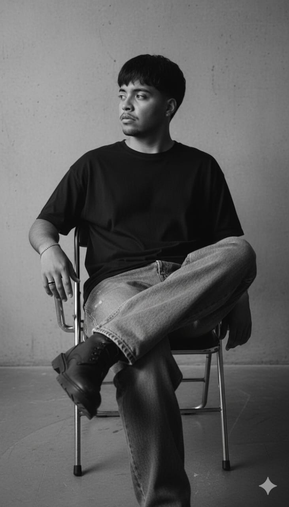

Responsable de la Estructura y la Funcionalidad de la web. Creó el esqueleto HTML que organiza los elementos (entrada, botones y resultados) e implementó toda la lógica de conversión en JavaScript. Su enfoque principal fue asegurar la precisión matemática de los cálculos y la interactividad de la interfaz.
A través del CSS, definió la paleta de colores, la tipografía y la distribución de todos los elementos, incluyendo el mural de equipo y la sección de información. Su trabajo garantiza que la calculadora sea visual y profesionalmente atractiva y se vea perfectamente en cualquier dispositivo.

Responsable de la Definición y Calidad del Proyecto. Creó el documento de especificaciones, detallando los requisitos funcionales (la lógica de la conversión) y los no funcionales (la velocidad, la seguridad y la usabilidad de la interfaz).